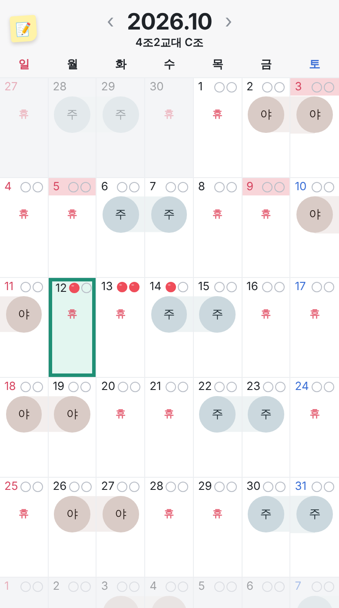
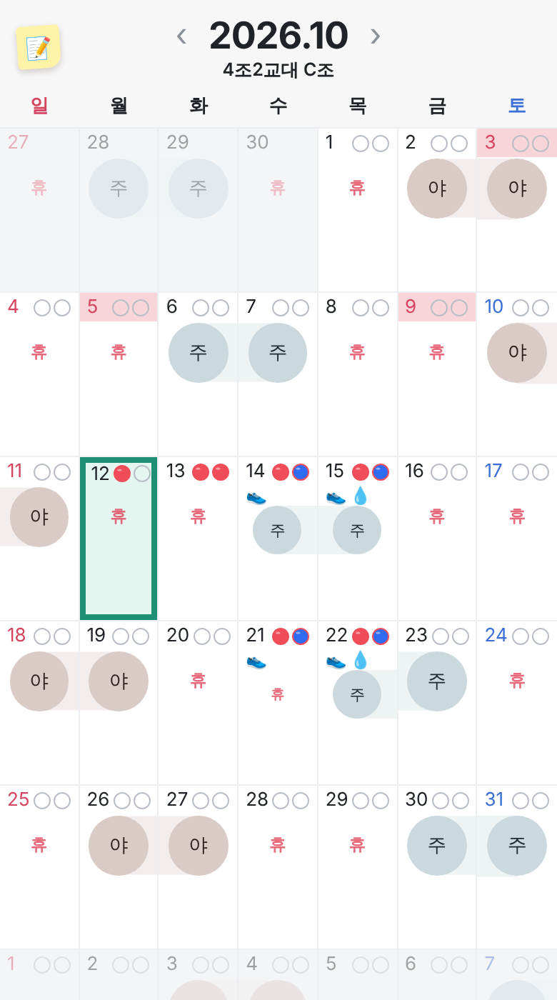
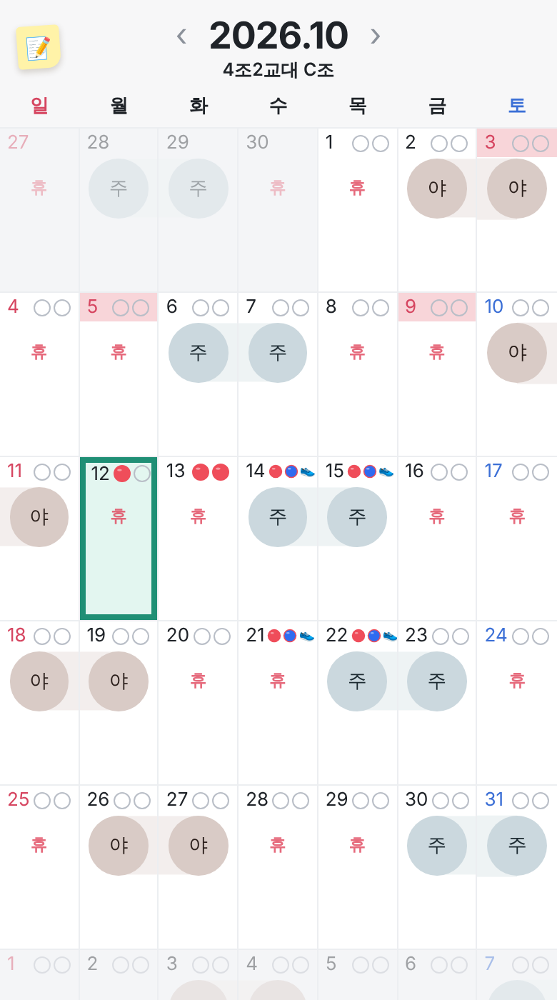

도장 개수 늘리기 (부가 기능 "도장 많이 쓰기")
실제 달력 위에 그린 시안이에요. 14 · 15 · 21 · 22일에 도장 3~4개가 찍힌 모습이에요. (알약 색 구분도 함께 보여요)
지금 · 하루 2개기본(꺼짐)이에요
13일처럼 날짜 옆에 2개까지
A · 둘째 줄 (추천)3~4개는 날짜 아래 작은 줄로 내려가고
그날만 근무 동그라미가 작아져요
B · 한 줄에 작게줄은 안 늘지만 아이콘이 너무 작고
날짜 옆이 빽빽해요